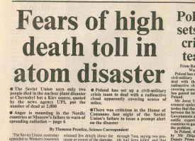
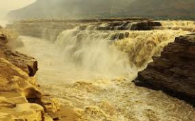

The Doomsday Clock is a symbol that represents
how close we are to destroying the world with dangerous technologies of our own making. Its
hands are set by the Bulletin of the Atomic Scientists, a group formed by Manhattan Project
scientists at the University of Chicago who helped build the atomic bomb but protested using
it against people. Doomsday Clock is currently placed at bulletien office at the University
of Chicago.
The time of the clock is currently 90 seconds to midnight.
What actually is a DOOMSDAY CLOCK?
The Doomsday Clock pictured at its setting of "90
seconds to midnight", last changed in January 2023
The Doomsday Clock is a symbolic representation of the likelihood of a global catastrophe,
especially from nuclear war or climate change. It was created in 1947 by the Bulletin of the
Atomic Scientists, a group of scientists and experts concerned about the dangers posed by
nuclear weapons. The clock's hands are set to represent how close the world is to a
potential global catastrophe, with midnight representing the hypothetical "doomsday."
The time on the clock is not determined by any precise scientific formula but is rather set
by the Bulletin's Science and Security Board, in consultation with a Board of Sponsors that
includes prominent scientists and intellectuals. The decision to move the clock's hands
closer to or further from midnight is based on factors such as geopolitical tensions, the
proliferation of nuclear weapons, climate change, and other global threats.
The Doomsday Clock has been adjusted numerous times since its inception, reflecting changes
in global circumstances and the perceived level of risk. It serves as a reminder of the
urgent need for action to address the existential threats facing humanity and has become an
iconic symbol of the precarious state of the world.
"In truth, Doomsday Clock is a global alarm clock. We need to
get up - and get to work." ~ Antonio Guterres,
General Secretary of United Nations
History
Here's a detailed timeline of the Doomsday Clock's changes:
1945: The Bulletin of the Atomic Scientists is founded by scientists who had
worked on the Manhattan Project, including renowned physicists such as Albert Einstein
and Robert Oppenheimer. The organization's mission is to engage the public and
policymakers on issues related to nuclear weapons, arms control, and global security.
1947: Just two years after the end of World War II and the bombings of Hiroshima
and Nagasaki, the Bulletin introduced the concept of the Doomsday Clock. The idea
originated from a group of scientists who were part of the Bulletin's leadership,
including physicist Eugene Rabinowitch. The clock was designed as a symbolic
representation of the world's vulnerability to catastrophic destruction, particularly
from nuclear war. Its hands were set to represent how close humanity was to potential
global catastrophe, with midnight symbolizing the hypothetical "doomsday." Initially, the clock was set at seven minutes to
midnight. This setting reflected the perceived level of danger posed by nuclear
weapons and the potential for a global nuclear conflict amid escalating Cold War
tensions between the United States and the Soviet Union. The setting was not
determined by any precise scientific formula but rather by the collective judgment
of the Bulletin's scientists and experts.
Atomic Attack on Hiroshima
and Nagasaki in August 1945.
1949: The clock was reset for the first time, to three minutes to midnight. The
reason for the change was the first atomic bomb test by the Soviet Union, in August
1949, which marked the beginning of the world’s nuclear arms race
In 1953, United States and Soviet Union successfully tests their first hydrogen bombs
which heightened the risk from nuclear weapons which further escalates the conditions of
ARM RACE , this results in the advancement of Doomsday clock to 2 minutes to midnight.
1960: It was set back to seven minutes to midnight because international
negotiations (“spirit of Camp David”) were taking place in Geneva between U.S. President
Dwight D. Eisenhower and Soviet Premier Nikita Khrushchev to end nuclear testing ,
reflecting in temporary ease of tensions.
1963: It was set back farther, to 12 minutes to midnight, after the Soviet Union,
the United Kingdom, and the United States signed the Nuclear Test-Ban Treaty, which
banned nuclear testing in Earth’s atmosphere, outer space, and underwater.
1968: United Nation involvement in Vietnam intensifies, India and Pakistan battle in
1965, Isreal and its arab neighbors renews hostilities in 1967 and development of
nuclear weapons in France and China in order to stand as a global players. This all
events makes the Doomsday clock to move back to 7 minutes to midnight.
Nuclear Non-Proliferation
Treaty signed in 1968.
1969: Nearly all of the world’s nations come together to sign the Nuclear
Non-Proliferation Treaty. The deal is simple: States with nuclear weapons vow to help
the treaty’s other signatories develop nuclear power if they promise not to produce
weapons. This results in the set back of Doomsday Clock to 10 minutes to midnight.
1972: The United States and Soviet Union sign two treaties. The Strategic Arms
Limitation Treaty (SALT) limits the number of ballistic missile launchers either country
can possess. The Anti-Ballistic Missile (ABM) Treaty seeks to stop a race for weapons
designed to shoot down an adversary’s incoming nuclear missiles. This helps to further
shift the clock backward to 12 minutes to midnight.
1974: India tests its first nuclear weapon. The United States and Soviet Union
appear to be modernizing their nuclear forces, not reducing them. This things makes the
clock to advance to 9 minutes to midnight.
India's first Nuclear Test
at Pokhran in 1974.
1980: Their failure to advance SALT treaty negotiations toward disarmament, both
the United States and Soviet Union have been behaving like ‘nucleoholics’ and the
inability of international institutions to contain political crises move the hands of
the clock forward to 7 minutes to midnight.
1984: As US-Soviet relations starts declining, The United States threatens to
provoke a new arms race by seeking a space-based anti-ballistic missile system,
prompting the Doomsday Clock to be set at 3 minutes to midnight.
1991: The clock was reset to 17 minutes to midnight, its farthest from doomsday thus
far. The decision came after the signing of the Strategic Arms Reduction Treaty (START)
by the Soviet Union and the United States, which was an agreement designed to reduce the
nuclear weapons arsenals of both countries.
1998: India carries out a series of nuclear tests that catch US intelligence off
guard. The tests provoke worldwide outrage, and tensions heighten when Pakistan holds
its own tests only three weeks later. Russia and the United States continue to serve as
poor examples to the rest of the world, with a combined total of more than 7,000 weapons
aimed at each other and ready to launch within 15 minutes. This led clock to shift to 9
minutes to midnight.
Two planes were crashed on
Twin Tower, USA by Osama bin Laden on 11 september 2001 (9/11)
2002: After the September 11, 2001, terrorist attacks, the United States
expresses increasing concerns about nuclear weapons falling into the hands of non-state
actors. The United States expresses a desire to design new nuclear weapons, especially
ones that can destroy hardened and deeply buried targets. It moves the hand of the clock
again to 7 minutes to midnight.
2007: North Korea conducts a nuclear test, and many in the international
community worry that Iran is working toward a bomb of its own. Meanwhile, the United
States and Russia remain ready to wage nuclear war within minutes, making the clock to
shifts further to 5 minutes to midnight. (Concerns about nuclear proliferation, climate
change, and emerging technologies prompt the Bulletin to expand the criteria used to set
the Doomsday Clock.)
2015: Unchecked climate change, global nuclear weapons modernizations, and
outsized nuclear weapons arsenals pose extraordinary and undeniable threats to the
continued existence of humanity. Now the clock tick at only 3 minutes to midnight
because international leaders are failing to perform their most important duty—ensuring
and preserving the health and vitality of human civilization.
2018: The Doomsday Clock is moved forward to 2 minutes to midnight, the closest
it has been since 1953, reflecting the heightened risks of nuclear war and climate
change.
2020: The Doomsday Clock is moved forward to 100 seconds to midnight, the closest
it has ever been to midnight. The decision reflects the heightened risks posed by
nuclear weapons, climate change, disruptive technologies, and political instability.
2023: Due to the Russia-Ukraine war, the Clock now stands at 90 seconds to
midnight—the closest to global catastrophe it has ever been.
Common Threats and Past Life Events
The Doomsday Clock is a symbolic representation of how close humanity is to a global
catastrophe, especially from nuclear war or other existential threats. The Bulletin of the
Atomic Scientists, which manages the clock, considers a range of factors when adjusting its
time, including:
Nuclear Weapons: The primary factor since the clock's inception has been the
presence and proliferation of nuclear weapons. Escalating tensions between nuclear-armed
states, advancements in nuclear technology, or the potential for accidental or
deliberate use of nuclear weapons can influence the clock's time. Some major incidents
are listed below:
Cuban Missile Crisis (1962): This was a direct confrontation between the
United States and the Soviet Union over the presence of Soviet ballistic
missiles in Cuba. The crisis brought the world to the brink of nuclear war and
is considered one of the closest moments to nuclear conflict during the Cold
War.
The New York Times
headlines on 23 October 1962.
Berlin Crisis (1961): While not a direct nuclear conflict, it was a tense
standoff between the United States and the Soviet Union over the status of
Berlin, which could have escalated into a nuclear confrontation.
Korean War (1950-1953): The Korean War saw the first military conflict of
the Cold War, with the United States and its allies fighting against North
Korea, supported by China and the Soviet Union. There were concerns about the
potential use of nuclear weapons during this conflict.
Suez Crisis (1956): This crisis involved Israel, France, the United
Kingdom, and Egypt over control of the Suez Canal. There were fears that the
conflict could draw in the United States and the Soviet Union, potentially
leading to a nuclear confrontation.
Indo-Pakistani War of 1971: While nuclear weapons were not used in
this conflict, it occurred shortly after both India and Pakistan had
conducted nuclear tests (in 1974 and 1998, respectively), raising concerns
about the potential for nuclear escalation during the conflict.
Vijay Diwas
(Day when Bangladesh was Born) is celebrated on 16 December.
Taiwan Strait Crisis (1954-1955 and 1995-1996): Tensions between
China and Taiwan, with the involvement of the United States, have
periodically escalated, leading to concerns about the potential for nuclear
conflict, especially during the 1995-1996 crisis.
Crisis in Ukraine (2014-present): While not a direct nuclear
conflict, the crisis in Ukraine, particularly Russia's annexation of Crimea
and ongoing conflict in Eastern Ukraine, has raised concerns about the
potential for nuclear escalation given Russia's nuclear arsenal.
North Korea's Nuclear Program (ongoing): North Korea's pursuit of
nuclear weapons and its provocative actions, including nuclear tests and
missile launches, have heightened tensions in the region and raised concerns
about the potential for a nuclear conflict.
These examples demonstrate various instances where nuclear weapons or the threat of nuclear
escalation have played a significant role in international conflicts or crises making the
Doomsday Clock to move further.
Climate Change: The impact of climate change on global security and the
environment is increasingly considered. Factors such as rising sea levels, extreme
weather events, and disruptions to food and water supplies can contribute to instability
and conflict, thus influencing the clock's time. Nevertheless, here are some major past
climate change events that have influenced global consciousness and could indirectly
affect perceptions of existential risk:
Tntergovermentaal
Panel on Climate Change (IPCC) Logo.
Intergovernmental Panel on Climate Change (IPCC) Reports: The IPCC
periodically releases comprehensive assessments of climate change, summarizing
the latest scientific understanding of the issue. These reports, which began in
1988, provide policymakers and the public with crucial information about the
impacts of climate change and the urgency of taking action. While the clock
itself doesn't directly respond to IPCC reports, they contribute to the broader
discourse on global risks.
Paris Agreement (2015): The adoption of the Paris Agreement marked a
significant milestone in international efforts to combat climate change. Signed
by nearly every country in the world, the agreement aims to limit global warming
to well below 2 degrees Celsius above pre-industrial levels. The agreement's
success or failure in driving meaningful action on climate change could
indirectly influence perceptions of existential risk and potentially impact the
Doomsday Clock.
Effects of
Paris Agreement- A UN bill passed in 2015.
Extreme Weather Events: Events such as hurricanes, wildfires,
heatwaves, and floods are becoming more frequent and severe due to climate
change. These events not only cause immediate loss of life and property but
also have broader implications for global stability, public health, food
security, and migration patterns. While individual events may not directly
affect the Doomsday Clock, they contribute to the overall understanding of
climate-related risks.
Melting Polar Ice Caps: The melting of polar ice caps, particularly
in the Arctic, has significant implications for global sea-level rise,
biodiversity, and weather patterns. The loss of polar ice contributes to the
destabilization of ecosystems and could have cascading effects on global
climate systems. While not a single event, ongoing trends in polar ice melt
contribute to the understanding of climate change's long-term impacts.
Global Climate Strikes: The rise of grassroots movements, such as the
Fridays for Future movement initiated by Greta Thunberg, has mobilized
millions of people worldwide to demand urgent action on climate change.
These protests raise awareness about the severity of the climate crisis and
put pressure on governments and institutions to take meaningful steps to
address it. While not events in the traditional sense, these movements shape
public discourse and political responses to climate change, which could
indirectly influence existential risk perceptions.
While these climate change events and phenomena may not directly determine adjustments
to the Doomsday Clock, they contribute to the broader context of global risks and
challenges facing humanity. As our understanding of the interconnectedness of different
existential threats evolves, the Doomsday Clock may increasingly consider climate change
alongside nuclear weapons and other factors when assessing the state of global security.
Emerging Technologies: Advances in technology, particularly in areas such as
artificial intelligence, biotechnology, and cyber warfare, raise concerns about their
potential misuse or unintended consequences. These developments could lead to new forms
of conflict or catastrophic events, impacting the clock's time.
SolarWinds Cyberattack (2020): The SolarWinds cyberattack was a highly
sophisticated supply chain attack that targeted multiple U.S. government
agencies and private sector organizations. The attackers compromised the
SolarWinds Orion software, a widely used network management tool, to distribute
malware and gain access to sensitive data. This attack underscored the
vulnerabilities in critical infrastructure and the sophistication of modern
cyber threats.
Attack Plan on
SolarWinds- A software company based in Tusla, Okla.
WannaCry Ransomware Attack (2017): WannaCry was a global ransomware
attack that infected hundreds of thousands of computers in over 150 countries.
The malware exploited a vulnerability in Microsoft Windows systems, encrypting
files and demanding ransom payments in Bitcoin for their release. WannaCry
disrupted critical services, including healthcare systems and transportation
networks, highlighting the widespread impact of cyber threats.
NotPetya Cyberattack (2017): NotPetya was a destructive malware attack
that targeted organizations worldwide, primarily in Ukraine. The malware spread
rapidly, encrypting files and rendering systems inoperable. NotPetya caused
significant financial losses for affected companies and disrupted global supply
chains, demonstrating the potential for cyberattacks to cause widespread
economic and societal disruption.
Sony Pictures Hack (2014): The Sony Pictures hack was a cyberattack
on Sony Pictures Entertainment that resulted in the theft and release of
sensitive company data, including internal emails, employee information, and
unreleased films. The attack, which the U.S. government attributed to North
Korea, was reportedly carried out in response to the film "The Interview,"
which depicted the assassination of North Korean leader Kim Jong-un.
Sony Pictures
hacked by a group "Gaurdians of Peace" on 24 November 2014.
Operation Aurora (2009): Operation Aurora was a series of
cyberattacks against several major technology companies, including Google,
Adobe, and Intel. The attacks, attributed to actors based in China, targeted
the companies' networks to steal intellectual property and gain access to
sensitive information. Operation Aurora highlighted the growing threat of
state-sponsored cyber espionage and the need for improved cybersecurity
measures.
SQL Slammer Worm (2003): The SQL Slammer worm was a fast-spreading
computer worm that infected thousands of servers worldwide in a matter of
minutes. Exploiting a vulnerability in Microsoft SQL Server, the worm caused
widespread internet congestion and disrupted critical services, including
emergency response systems and financial networks. The rapid spread of SQL
Slammer demonstrated the potential for worms to cause widespread disruption
on the internet.
These events are notable examples of major cyberattacks and cybersecurity incidents that
have occurred in the past, demonstrating the evolving nature of cyber threats and the
need for robust cybersecurity measures to mitigate risks, which indirectly and directly
affects doomsday clock.
Pandemics and Health Security: Events such as pandemics or widespread health
crises pose significant risks to global stability and security. The COVID-19 pandemic,
for example, highlighted vulnerabilities in global health systems and the potential for
such events to disrupt societies and economies, influencing the clock's time
Plague of Justinian (541-542 AD): Caused by the bacterium Yersinia
pestis, this pandemic swept through the Byzantine Empire and beyond, resulting
in an estimated 25-50 million deaths.
Cholera outbreak in
India.
Black Death (1347-1351): Another outbreak of Yersinia pestis, the Black
Death ravaged Europe, Asia, and North Africa, claiming an estimated 75-200
million lives, making it one of the deadliest pandemics in history.
Third Cholera Pandemic (1852-1860): Originating in India, this pandemic
spread to Asia, Europe, North America, and Africa, resulting in significant
mortality and driving advances in understanding and combating cholera.
Asiatic Flu or Russian Flu (1889-1890): The first flu pandemic recorded
in the era of microbiology, caused by an H2N2 influenza virus, resulted in an
estimated 1 million deaths worldwide.
Spanish Flu (1918-1919): Caused by the H1N1 influenza virus, the Spanish
Flu pandemic infected approximately one-third of the global population and
caused an estimated 50 million deaths worldwide.
Asian Flu (1957-1958): Caused by an H2N2 influenza virus, this pandemic
originated in East Asia and resulted in an estimated 1-2 million deaths
worldwide.
Hong Kong Flu (1968-1969): Caused by an H3N2 influenza virus, this
pandemic began in Hong Kong and resulted in an estimated 1-4 million deaths
worldwide.
Global outrage
of Influenza A (H1N1) known as Swine Flu.
HIV/AIDS Pandemic (1980s-present): Caused by the human
immunodeficiency virus (HIV), the HIV/AIDS pandemic has resulted in an
estimated 36 million deaths worldwide since the beginning of the epidemic.
H1N1 Influenza Pandemic (2009-2010): Also known as Swine Flu, caused
by a novel strain of the H1N1 influenza virus, this pandemic resulted in an
estimated 151,700-575,400 deaths worldwide during the first year.
COVID-19 Pandemic (2019-present): Caused by the novel coronavirus
SARS-CoV-2, the COVID-19 pandemic has led to millions of deaths worldwide
and has caused widespread social, economic, and public health impacts.
These pandemics represent significant events in human history, shaping societies and
influencing public health policies, medical practices, and our understanding of
infectious diseases.
Environmental Degradation: Beyond climate change, other forms of environmental
degradation, such as pollution, deforestation, and loss of biodiversity, can have
far-reaching consequences for human well-being and security. These factors are
increasingly taken into account when assessing global risks and the time on the Doomsday
Clock.
Bhopal Gas Tragedy
Bhopal Gas Tragedy (1984): The Bhopal Gas Tragedy was a catastrophic
industrial accident that occurred at the Union Carbide pesticide plant in
Bhopal, India. A leak of methyl isocyanate gas resulted in thousands of
immediate deaths and long-term health effects for survivors. The incident
highlighted the risks associated with chemical industries and industrial
pollution.
Deepwater Horizon Oil Spill (2010): The Deepwater Horizon oil spill was
one of the largest marine oil spills in history, caused by an explosion on the
Deepwater Horizon offshore drilling rig in the Gulf of Mexico. Over 200 million
gallons of crude oil were released into the ocean, causing extensive damage to
marine ecosystems, coastal communities, and economies in the region.
Love Canal Disaster (1978): The Love Canal Disaster involved the
discovery of toxic chemical waste buried beneath a residential neighborhood in
Niagara Falls, New York. The chemicals, including benzene and dioxin, had been
dumped in the abandoned Love Canal by a chemical company. The incident raised
awareness about the dangers of hazardous waste disposal and led to the
development of environmental regulations in the United States.
Chernobyl Nuclear Disaster (1986): The Chernobyl nuclear disaster
occurred at the Chernobyl Nuclear Power Plant in Ukraine, then part of the
Soviet Union. A reactor explosion released significant amounts of radioactive
material into the atmosphere, resulting in widespread contamination of the
surrounding area and beyond. The disaster had severe environmental, health, and
socio-economic consequences, including long-term impacts on ecosystems and human
health.

News headlines
stating high death toll after nuclear disaster.
Fires in the Amazon Rainforest (ongoing): The Amazon rainforest,
often referred to as the "lungs of the Earth," has experienced increasingly
frequent and intense wildfires in recent years, primarily due to
deforestation, land clearing, and climate change. These fires not only
contribute to carbon emissions and climate change but also destroy critical
habitat for biodiversity and indigenous communities.
Melting of the Greenland Ice Sheet (ongoing): The Greenland Ice
Sheet, a massive ice body covering much of Greenland, has been experiencing
accelerated melting in recent decades due to rising temperatures and climate
change. The melting of the ice sheet contributes to sea-level rise, leading
to coastal erosion, flooding, and threats to communities and ecosystems
around the world.
Aral Sea Disaster (1960s-present, Central Asia): The Aral Sea, once
one of the world's largest inland bodies of water, has experienced
catastrophic shrinkage due to excessive water diversion for irrigation
projects. This diversion, primarily for cotton farming, has caused the sea
to lose over 90% of its volume since the 1960s, leading to severe
environmental degradation, loss of biodiversity, and economic collapse in
the surrounding region.

Yellow River
Flood also known as "China's Sorrow" gives a death toll of upto 8
million peoples.
Yellow River Flood (1887): One of the deadliest floods in recorded
history, the Yellow River Flood in China killed between 900,000 and 2
million people, primarily due to flooding and subsequent famine.
Holodomor (1932-1933): A man-made famine inflicted upon Ukraine and
parts of the Soviet Union by the policies of Joseph Stalin's regime,
resulting in millions of deaths from starvation and malnutrition.
Haitian Hurricane (1780): The Great Hurricane of 1780 struck the
Caribbean, particularly affecting the island of Hispaniola (now Haiti and
the Dominican Republic), causing widespread destruction and an estimated
22,000-27,500 fatalities.
Headlines fron
THe Times of India tells about Partition of India in 1947.
Indian Ocean Tsunami (2004): Triggered by a massive undersea
earthquake off the coast of Sumatra, Indonesia, the Indian Ocean tsunami
devastated coastal communities in several countries, resulting in
approximately 230,000-280,000 deaths.
Galveston Hurricane (1900): The Galveston Hurricane struck the city
of Galveston, Texas, causing massive storm surges and flooding that resulted
in approximately 6,000-12,000 fatalities, making it one of the deadliest
natural disasters in U.S. history.
Partition of India (1947): The partition of British India into the
independent nations of India and Pakistan led to widespread violence,
displacement, and mass killings along religious and ethnic lines, resulting
in the deaths of an estimated 200,000 to 2 million people.
These events further demonstrate the diverse array of past life disasters, ranging from
natural calamities to industrial accidents and humanitarian tragedies.
How to Turn Back Doomsday Clock?
Everyone on Earth has an interest in reducing the likelihood of global catastrophe from nuclear
weapons, climate change, advances in the life sciences, disruptive technologies, and the
widespread corruption of the world’s information ecosystem. These threats, singularly and as
they interact, are of such a character and magnitude that no one nation or leader can bring them
under control. That is the task of leaders and nations working together in the shared belief
that common threats demand common action. As the first step, and despite their profound
disagreements, three of the world’s leading powers—the United States, China, and Russia—should
commence serious dialogue about each of the global threats outlined here. At the highest levels,
these three countries need to take responsibility for the existential danger the world now
faces. They have the capacity to pull the world back from the brink of catastrophe. They should
do so, with clarity and courage, and without delay.
It’s 90 seconds to midnight.
FAQ's
The Doomsday Clock is a design that warns the public about how close we are
to destroying our world with dangerous technologies of our own making. It is a metaphor,
a reminder of the perils we must address if we are to survive on the planet.
When the Doomsday Clock was created in 1947, the greatest danger to humanity came from
nuclear weapons, in particular from the prospect that the United States and the Soviet
Union were headed for a nuclear arms race. The Bulletin considered possible catastrophic
disruptions from climate change in its hand-setting deliberations for the first time in
2007.
Co-editor Hyman Goldsmith asked artist Martyl Langsdorf to come up with a
design for the cover of the June 1947 edition of the Bulletin, the first issue published
as a magazine rather than a newsletter. Martyl—as she was known professionally—was
married to a physicist, Alexander Langsdorf, who worked on the Manhattan Project at the
University of Chicago.
At first, the artist considered using the symbol for uranium. But as she listened to the
scientists who had worked on the Bomb, as they passionately debated the consequences of
the new technology and their responsibility to inform the public, she felt their sense
of urgency. So she sketched a clock to suggest that we didn’t have much time left to get
atomic weapons under control.
Graphic designer Michael Bierut reimagined the iconic image in 2007.
Martyl set the original Clock at seven minutes to midnight because, she said,
“it looked good to my eye.”
In the early days, Bulletin Editor Eugene Rabinowitch decided whether the
hand should be moved. A scientist himself, fluent in Russian, and a leader in the
international disarmament movement, he was in constant conversation with scientists and
experts within and outside governments in many parts of the world. Based on these
discussions, he decided where the clock hand should be set and explained his thinking in
the Bulletin’s pages.
When Rabinowitch died in 1973, the Bulletin’s Science and Security Board took over the
responsibility and has since met twice a year to discuss world events and reset the
clock as necessary. The board is made up of scientists and other experts with deep
knowledge of nuclear technology and climate science, who often provide expert advice to
governments and international agencies. They consult widely with their colleagues across
a range of disciplines and also seek the views of the Bulletin’s Board of Sponsors,
which includes nine Nobel Laureates.
After the Soviet Union successfully tested its first atomic bomb in 1949,
Rabinowitch reset the clock from seven minutes to midnight to three minutes to
midnight.
In 2023, the Science and Security Board set the time to 90 seconds to
midnight, largely (though not exclusively) because of the dangers of the war in Ukraine.
Before 2023, the closest the hand was set to midnight was 100 seconds to midnight in
2020.
In 1991, with the end of the Cold War, the United States and the Soviet Union
signed the Strategic Arms Reduction Treaty, the first treaty to provide for deep cuts to
the two countries’ strategic nuclear weapons arsenals, prompting the Bulletin to set the
clock hand to 17 minutes to midnight.
No. They were not moved during the 10-day crisis because too little was known
at the time about the circumstances of the standoff or what the outcome would be. In
fact, after the crisis, US and Soviet leaders installed a direct telephone line for
communication, and within months signed the Partial Test Ban Treaty outlawing
underground nuclear weapons testing—the first treaty addressing the nuclear weapons
threat. On the basis of these steps, the Bulletin set the clock back from seven minutes
to midnight to 12 minutes to midnight in 1963.
Since February 2019, the Doomsday Clock has been located in the Bulletin
offices at the University of Chicago: 1307 East 60th Street, 3rd floor. Click on the
"Timeline" link on the Doomsday Clock page for an interactive timeline of the clock’s
history and the reasoning behind each resetting.
The Doomsday Clock is not a forecasting tool, and we are not predicting the
future. Rather, we study events that have already occurred and existing trends. Our
Science and Security Board tracks numbers and statistics—looking, for example, at the
number and kinds of nuclear weapons in the world, the parts per million of carbon
dioxide in the atmosphere, the degree of acidity in our oceans, and the rate of sea
level rise. The board also takes account of leaders’ and citizens’ efforts to reduce
dangers, and efforts by institutions—whether of governments, markets, or civil society
organizations—to follow through on negotiated agreements.
The Bulletin is a bit like a doctor making a diagnosis. We look at data, as physicians
look at lab tests and x-rays, and also take harder-to-quantify factors into account, as
physicians do when talking with patients and family members. We consider as many
symptoms, measurements, and circumstances as we can. Then we come to a judgment that
sums up what could happen if leaders and citizens don’t take action to treat the
conditions.
Ensuring the survival of our societies and the human species is not a
political agenda. Cooperating with other countries to achieve control of extremely
dangerous technologies should not involve partisan politics. If scientists involved with
the Bulletin are critical of current policies on nuclear weapons and climate change, it
is because those policies increase the possibility of self-destruction.
The Bulletin has moved the Clock hand away from midnight almost as often as it has moved
it toward midnight, and as often during Republican administrations in the United States
as during Democratic ones. It moved the hand farthest away in 1991 when US President
George H.W. Bush’s administration signed the Strategic Arms Reduction Treaty with the
Soviet Union.
As long as nuclear weapons exist and can be used, the risk that we could
destroy civilization also exists. Such a calamity has not occurred because national
leaders have so far heeded warnings, and because at critical times in the past 78 years,
they have set up communication channels with adversaries, negotiated treaties to control
the weapons, taken steps to radically reduce arsenals, and engaged erstwhile enemies in
cooperative projects. Preventing nuclear war requires continued diplomacy, more
exchanges of information, and open communications that engender trust.
Likewise, as long as Earth’s climate continues to change, we are at risk of suffering
the potential consequences, in particular disruptions in the environment—such as
extended droughts, changes in growing seasons, sea level rise, and fisheries
die-offs—that threaten human survival.
Humans invented both nuclear weapons and the fossil-fuel powered machines that
contribute to climate change; we know how they work, so presumably we can find ways to
reduce or eliminate the harm. But we need concerted cooperation worldwide to prevent
calamity.
Each of these threats has the potential to destroy civilization and render
the Earth largely uninhabitable by human beings. They are also intertwined: Some
advocate for more nuclear power to reduce carbon dioxide emissions, but increasing the
number of nuclear reactors, and the amount of enriched uranium and plutonium required
for their operation, would also increase the risk of spreading nuclear weapons.
Likewise, if we don’t reduce emissions, some natural resources, like fresh water, could
become more scarce, leading to conflicts that might spiral into war and the possible use
of nuclear weapons.
We can’t afford to address one threat without addressing the other. And in fact, the
international cooperation required to reduce and prohibit nuclear weapons would likely
also lead to cooperation to save us from deadly climate disruption. At the end of the
day, trying to answer the question is like standing around in a burning house arguing
about whether it is better to die of smoke inhalation or from a falling timber.
First, get smart about the problems. Nuclear weapons and climate change may
seem to be outside our daily experience and beyond our control, but we all have a stake
in avoiding untimely death. We want to live our lives free from destruction by nuclear
weapons and from the growing scarcity of natural resources brought about by a warming
planet. These interests in survival should motivate us to learn as much as we can about
the powerful technologies that could destroy our way of life.
Second, share what you’ve learned with others—in your family, workplace, church, school,
or social media feeds. The more we talk to each other about what matters most—surviving
and flourishing—the more confidence we’ll have about expressing our interests.
Third, tell your government representatives that you don’t want even more of your tax
money spent on nuclear weapons or on subsidizing carbon dioxide-producing fossil fuel
technologies. Write letters, tell them at town hall meetings, email their offices, and
let them know that your security depends on getting rid of nuclear weapons and on
finding ways to keep our planet habitable for humanity.